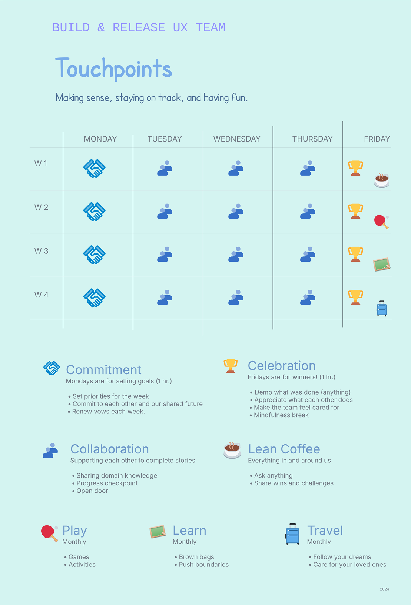

Designing Predictability
A case study about designing the conditions for alignment, visibility, and predictable delivery—without heavy process.
Key takeaways
- Designed a lightweight operating rhythm to improve shared visibility and momentum.
- Expanded authorship while holding a coherent experience direction.
- Enabled the product to be addressed as an end-to-end system.
The Conditions I Inherited
In early 2024, I stepped into my first people-management role at JPMorgan Chase, transitioning from an individual contributor position into a space that had experienced frequent leadership turnover.
I inherited a five-person UX team supporting Build & Release within the Engineering Portal. In this space, progress depended less on individual effort and more on shared clarity across functions—and it came with challenges typical of large organizations in transition:
Distributed team
A distributed team with knowledge spread across individuals, and limited experience operating as a coordinated unit in a multi-stakeholder environment.
Fragmented product space
A complex product area with overlapping ownership and inconsistent patterns, making the end-to-end experience feel disjointed for users.
UX engagement late in the cycle
UX engagement often involved late in the process, after key decisions were already made, placing UX in a reactive posture.
Alignment gaps
Inconsistent prioritization across Product and Engineering made sequencing unclear, creating parallel asks and fragmenting UX capacity.
These dynamics weren’t unique, but they required intentional design leadership. I focused on designing the conditions for alignment, visibility, and coherence, through lightweight interventions that protected focus and improved delivery.
Designing the Conditions for Impact
Rather than treating symptoms in isolation, I focused on designing the conditions that enabled designers, engineers, and product partners to move forward with shared clarity and momentum.
Shared operating rhythm
I introduced lightweight planning and review rituals to create clarity around priorities, sequencing, and ownership—without adding heavy processes. The goal wasn’t speed, but predictability and shared momentum.
Visible, collaborative work
I increased visibility into in-progress work and encouraged shared accountability, shifting UX engagement from reactive support to an active partnership with Product and Engineering.
Coherence + expanded ownership
I articulated a coherent direction early to help the team align, connecting each contribution to the end-to-end system. As shared accountability grew, ownership expanded without reintroducing fragmentation.
Turning Strategy into Practice
With a clear strategic direction in place, I focused on translating intent into a consistent, observable practice. Rather than introducing change all at once, I established a predictable weekly cadence that balanced focus, learning, and visibility— allowing the team to build new habits incrementally while continuing to deliver.
Creating focus through short planning cycles
I introduced one-week cycles to reinforce prioritization, accountability, and completion. Each week began with a commitment moment, where we aligned priorities to capacity. Work was broken into small complementary pieces designed to interlock—so progress depended on shared momentum rather than isolated effort. To reinforce partnership rather than oversight, I took on work alongside the team, signaling shared ownership and support.
Building learning into the flow of work
I allocated dedicated space for designers to share product knowledge, design rationale, and emerging insights—occasionally supplemented with guest perspectives. Over time, this broadened expertise across the team and reduced dependency on single points of knowledge. Learning was treated as part of delivery, not a parallel track.
Increasing visibility and early alignment
Midweek checkpoints surfaced progress and risks early, enabling the team to adjust collaboratively rather than react late. These moments were not status updates—they were working sessions used to identify dependencies, unblock, and recalibrate.
Reinforcing ownership through demonstration
The week concluded with demos where completed work—regardless of size—was shared and discussed with stakeholders. These sessions connected individual contributions to the broader experience and, over time, expanded from an internal ritual into a cross-functional alignment point. Visibility became a catalyst for trust.
As the team gained confidence, I made room for discovery work—competitive analysis, industry pattern review, and early concept exploration—alongside team-building and informal connection. The structure was not the point; it was the scaffolding that kept delivery steady while making room for what came next.
Weekly rhythm (overview)
The cadence created a steady loop of visibility—turning planning, learning, and alignment into a repeatable rhythm that reduced reactivity over time. In practice, it followed four beats:
-
Mon
CommitmentScope work to capacity; lock priorities and ownership.
-
Tue
LearningShare domain context, rationale, and patterns-in-progress.
-
Wed
CheckpointSurface risks and dependencies early; unblock and recalibrate.
-
Fri
DemoShare completed work; connect to the end-to-end experience with stakeholders.

From Fragmentation to Coherence
As the team developed a shared rhythm and clearer operating model, space opened to address the Build & Release experience more holistically. The product could be approached not as isolated surfaces, but as an end-to-end system—with clearer relationships between tools, stages, and user actions.
The resulting designs emphasized clearer sequencing, more consistent interaction patterns, and reduced cognitive load. The experience became calmer—not because it was simplified, but because it was better aligned.
Designing for Clarity, Partnership, and Predictability
This experience reinforced a belief I have carried throughout my career: strong design is not defined by control, but by the conditions it creates. In this case, the work wasn’t only about improving interfaces—it was about shaping how cross-functional teams operate so that good decisions can happen consistently.
The turning point was recognizing that clarity is something we design—through rhythm, shared artifacts, and explicit commitments. Once work becomes visible and legible, it’s easier for design, engineering, and product partners to move as one team rather than as a set of independent functions.
Over time, that clarity made partnership easier: collaboration became more proactive, expectations became shared, and tradeoffs became earlier discussions. And as alignment strengthened, the most meaningful outcome emerged: predictability—not as rigidity, but as trust. Stakeholders could understand what was coming, when, and why.
“Rhythm creates clarity. Visibility creates partnership. Alignment creates predictability.”
Stepping into people leadership didn’t pull me away from design craft—it expanded the surface where design has impact: the team’s operating model, the quality of collaboration, and the reliability of delivery. I still design. I simply do it across more dimensions now.